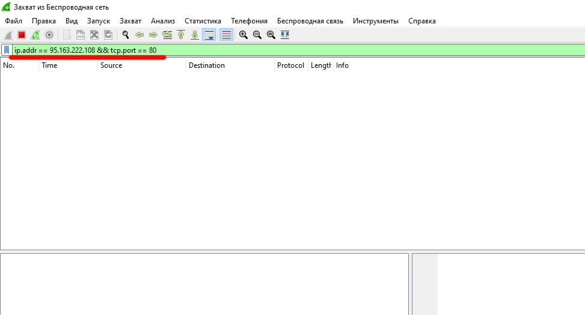
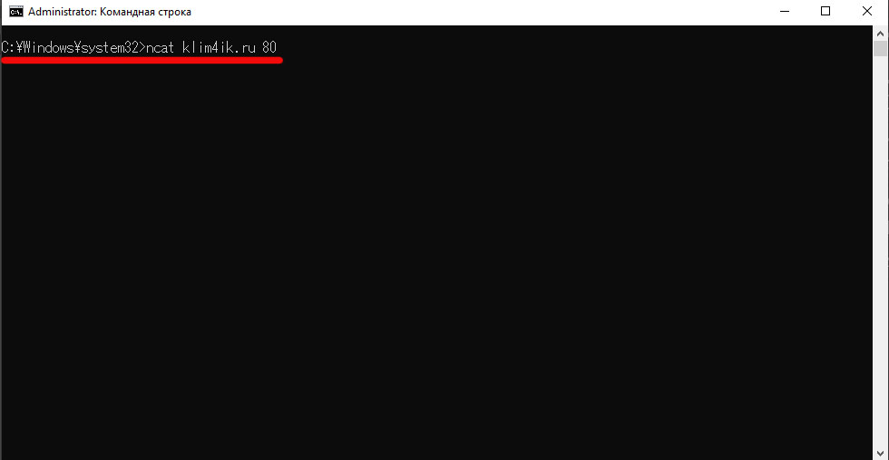
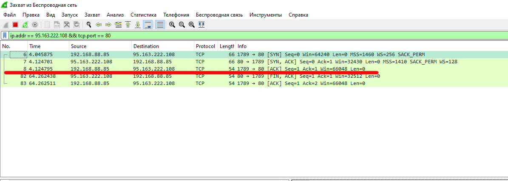
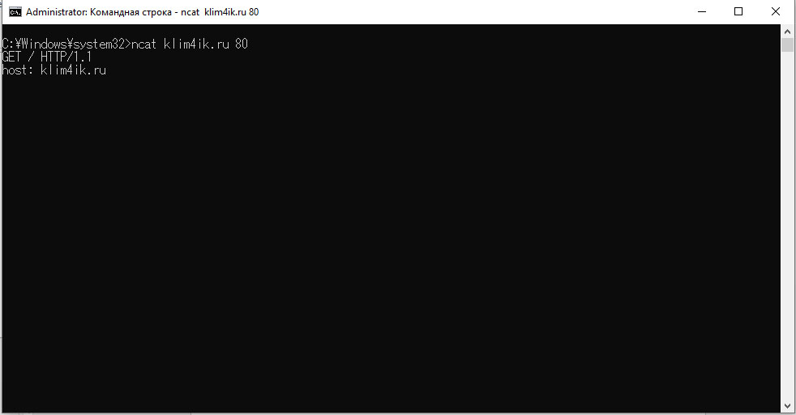
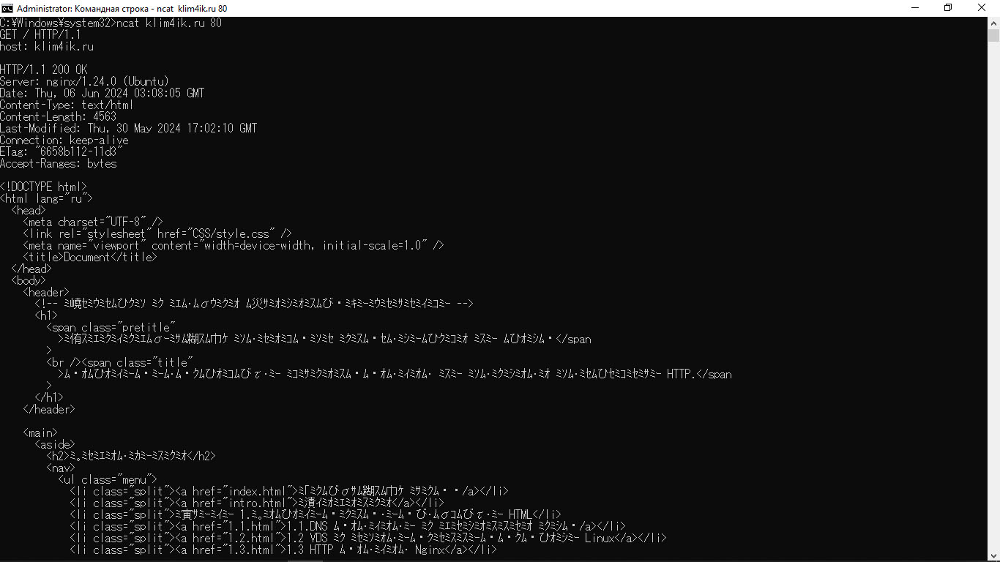
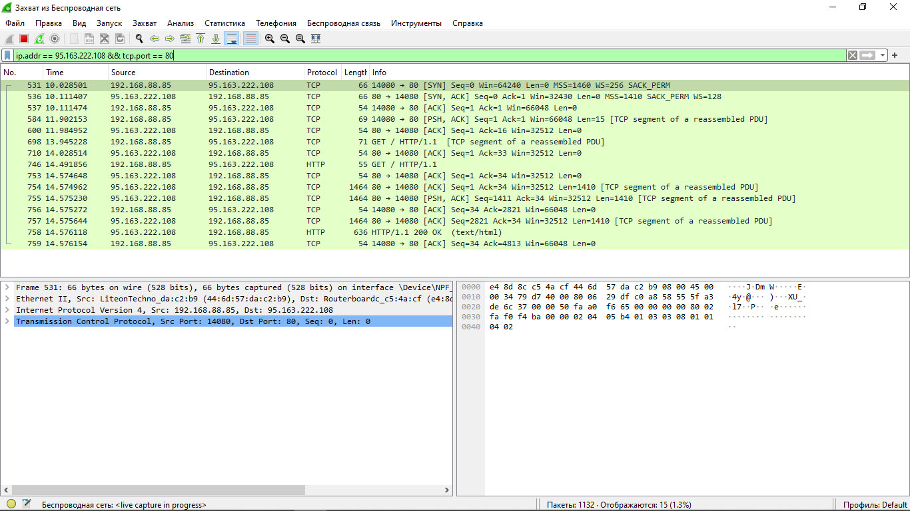

2.4 просмотр статичных файлов через Telnet
Для того чтобы просмотреть статичные данные сервера и клиента нам потребуется программа wireshark она позволяет просматривать сетевой трафик и netcat это программа, позволяющая устанавливать tcp и udp соединение.
Через netcat мы будем отправлять telnet запрос потому что если использовать просто telnet, то к его запросу будут добавляться дополнительные ненужные данные которые сервер не сможет воспринять и разорвет соединение.
Wireshark мы будем использовать чтобы просматривать трафик идущий от клиента (нашего telnet’а) и сервера (nginx).
1. сначала запустим wireshark и установим фильтр на просмотр трафика, идущего на/от сервер’а и только на 80 порте.
2. Дальше нам надо открыть командную строку и прописать в ней команду: ncat “ip-адресс” “порт” (обычно 80).
Эта команда установит соединение с сервером и дальше будет ждать запрос.
3. А тем временем в wireshark мы получаем 3 пакета которые представляют наш запрос серверу и его ответ. Если мы подождем около 600 секунд, то сервер отправит дополнительный ответ который разорвет соединение.
Первый отправленный пакет (syn) является нашим запросом на подключение к серверу на что он дает ответ следующим пакетом (ask) затем идет еще один наш запрос (syn, ask). То, что ниже красной черты это завершение обмена запросами клиента и сервера. Сервер разрывает соединение первым запросом, а далее мы даем ему на это какой-то ответ.
4. теперь снова обратимся к серверу, однако теперь совершим запрос “GET” и URL путь, что мы собираемся получить и версию протокола “/ HTTP/1.1”.
Полный запрос: “GET / HTTP/1.1”.
После этого нас сервер попросит указать имя хоста (Klim4ik.ru). для того чтобы его указать введите команду: «host: “хост”».
Далее введите пустую строку (это означает что заголовок запроса закончен).
И сервер выдаст нам статичные данные.
Так это будет выглядеть в wireshark.
Вывод из этой главы мы поняли, как происходит обмен данными на уровне HTTP и TCP соединения. Для исследования HTTP протокола мы использовали netcat, а для исследования TCP соединения использовали wireshark.